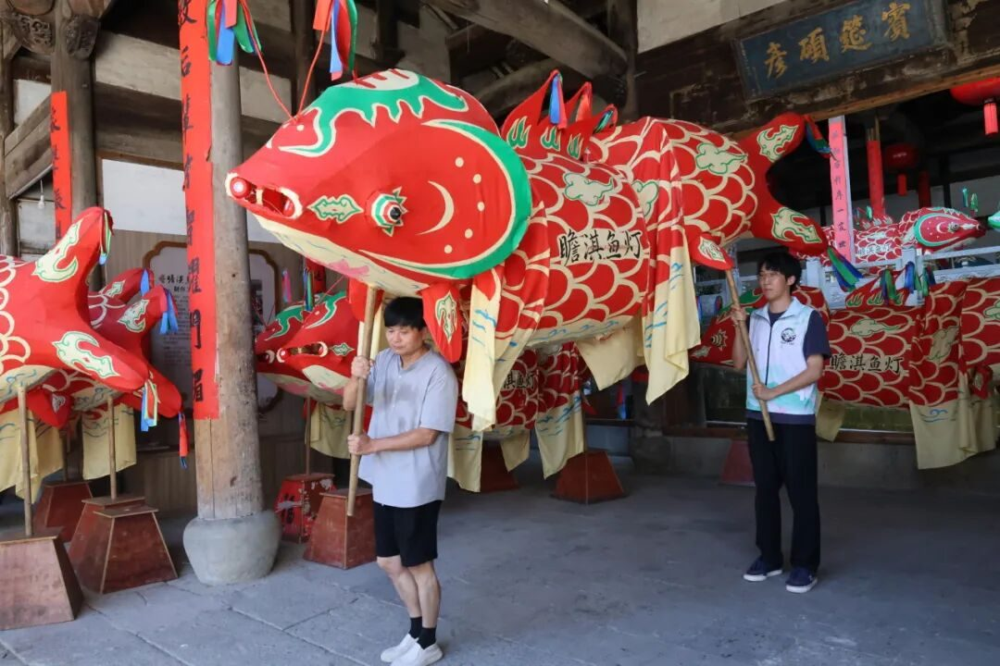
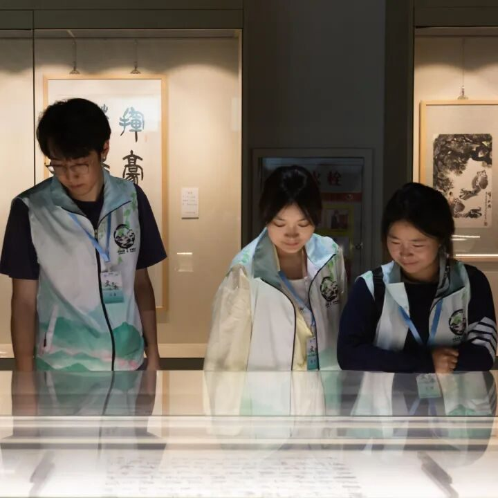
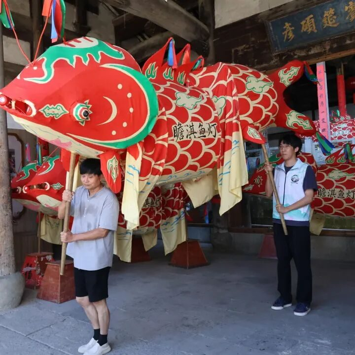
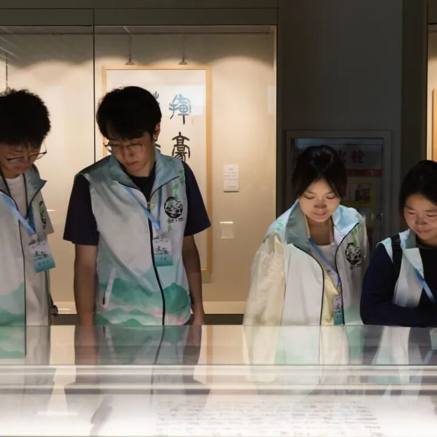
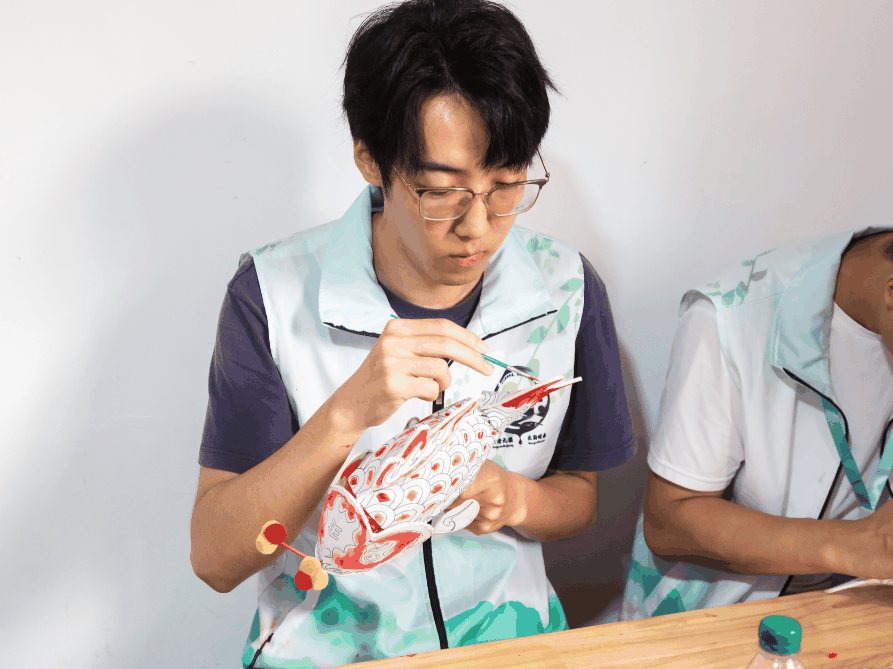
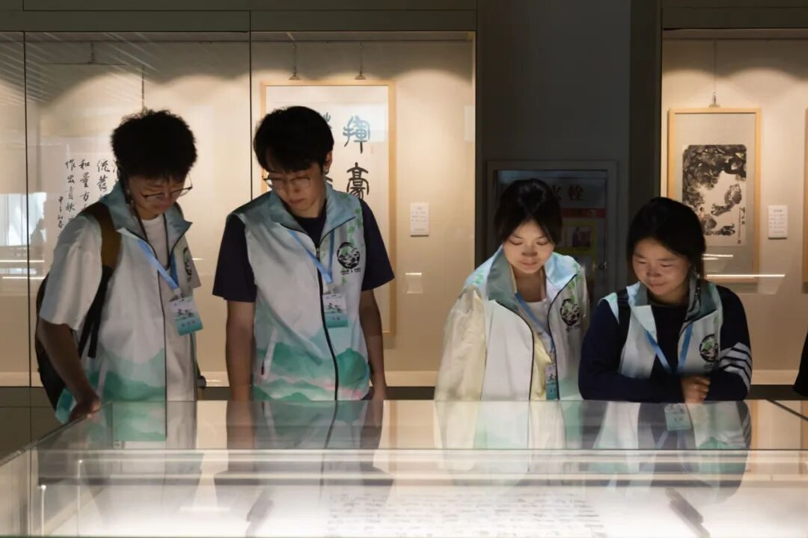
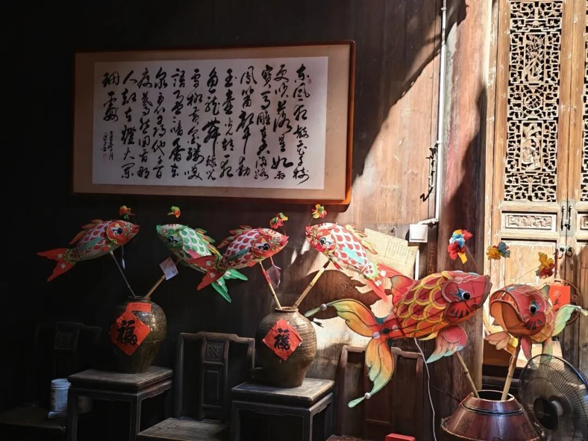
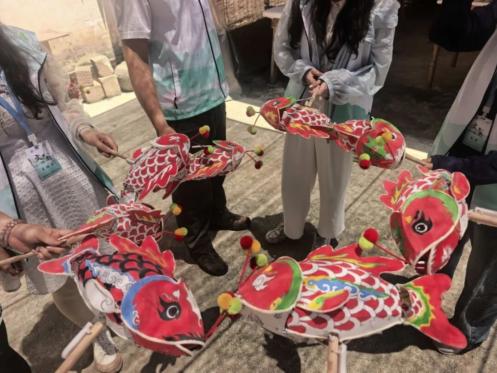

【行者无疆·文韵皖南】个人实践感悟——闫磊



在行走中感受非遗
在实践中认识自己
行者无疆
Walkers Without Borders


行路实践，亦是向内回望

<徽州行思录>
Huizhou Journey Reflection
此刻抬头，世界没有天花板，
我可以是山野的风，也可以是橘子味的日落，
热爱自己所热爱的，喜欢便是自由。
Looking up now, the world has no ceiling,
I can be the wind of the mountains or the sunset of orange flavor,
Love what you love, love is freedom.

以行自省，以责知度
Reflect through practice, grow with responsibility.
XING ZHE

技藏岁月，心守素真
Art bears time, hearts hold sincerity.

XING ZHE
古村遇暖，短聚留怀
Warmth in hamlets, memories in brief meetings.

XING ZHE
山水共赴，相逢致谢
Journey side by side, cherish every encounter.

XING ZHE


行者个人感悟
奔赴山野远方，打破认知的边界
我可以是同行的引路者，也可是躬身的学习者
Heading for distant lands, breaking the bounds of perception . I can be a guide for peers, or a humble learner myself.
出发之前，我曾无数次设想这次社会实践的模样：走进徽州的街巷，拜访非遗传承人，近距离观察传统技艺，再用文字和影像记录沿途的所见所闻。那时的我认为，只要提前做好分工，大家各自完成任务，这次实践便能够顺利进行。
真正以队长的身份置身其中后，我才发现，社会实践并不是按照计划完成几项任务那么简单。它既是一次走近非遗、了解社会的过程，也是一次与团队成员相互磨合、重新认识自己的经历。
在团队管理上，我更倾向于给予成员一定的自由。我不习惯事事过问，也不希望用过多的规定让团队氛围变得紧张。我相信每个人都有自己的做事方式，只要明确大致方向，大家就能够按照分工推进任务。实践中的大部分时间，我也确实采取了相对宽松的管理方式。

Walkers Without Borders
行者无疆·文韵皖南
开启一段新的旅程
Embark on a new journey.
然而，随着实践不断深入，我逐渐意识到，仅仅完成分工并不等于真正做好一件事情。路线安排、采访准备、素材整理、账单记录和推送呈现，看似彼此独立，实际上相互关联。任何一个环节出现疏漏，都可能影响最终效果。在收到一些意见和提醒后，我开始重新审视自己的做法：给予成员自由固然重要，但作为队长，我是否也应该在关键环节投入更多关注？
这种思考让我经历了一段并不轻松的心理变化。最初，我会担心别人的意见是否意味着自己不够负责，也会怀疑原来的管理方式是否存在问题。后来我开始和ai聊天来不断剖析自己哈哈哈哈，最近其实有些释然了，成长并不是在一次实践中突然变得成熟，也不是从此能够处理好所有问题。它更多意味着，在面对不同意见时愿意停下来思考，在发现自身不足后不急于否定自己，也不逃避应该承担的责任。现在回看，我依然认为给予成员信任和空间是有必要的，但我也更加明白，自由需要建立在清晰的责任和充分的沟通之上。
行者无疆·文韵皖南
行者个人感悟
踏过古巷阡陌，触摸岁月的余温
我可以是寻迹的旅人，也可以是文化的追光者
Stepping through ancient lanes, I touch the echoes of timeI can be a wandering traveler, or a pursuer of culture
这并不是我第一次参加与非遗有关的社会实践，而是第三次。相比最初接触非遗时对技艺的新奇，这一次，我似乎更愿意把目光停留在技艺背后的人身上。一路走来，真正让我动容的，不只是那些复杂精巧的制作工序，也不只是作品本身所承载的历史与文化，更是传承人老师们身上共有的朴素、真诚，以及他们对艺术近乎固执的坚守。
他们并不习惯用宏大的语言讲述自己的选择。很多时候，他们只是平静地介绍手中的材料，耐心地示范已经重复过无数次的步骤，谈起自己做了多少年、遇到过怎样的困难。那些在旁人看来需要反复强调的“传承”与“坚守”，对他们而言，却仿佛只是日复一日的生活。他们很少刻意渲染自己的付出，但正是这种不加修饰的平静，更让我感受到一门艺术能够延续至今的分量。

这并不是我第一次参加与非遗有关的社会实践他们对待我们也同样真诚。我们只是短暂到访的学生，能够为他们做的事情其实十分有限，但他们依然愿意放下手中的工作，认真回答我们并不成熟的问题，也毫无保留地向我们展示自己熟悉的技艺。在他们身上，我很少感受到刻意的包装和疏离，更多的是一种朴素的热情——只要有人愿意了解，他们便愿意认真地讲；只要有人愿意学习，他们便愿意耐心地教。
这种坚守并不轰轰烈烈，甚至很少被人看见，却比任何宏大的表达都更有力量。三次非遗实践带给我的，也不只是对传统文化越来越多的了解，更是一种难以割舍的亲近感。每一次走近这些传承人，我都会更加敬重他们，也更加珍惜人与人之间不加修饰的真诚。或许，这正是我一次次走近非遗之后，最深、也最真实的感受。

行者无疆·文韵皖南
行者个人感悟
晚风漫过古村，灯火点亮旧时光
我可以是故事的聆听者，也可是记忆的记录人
Night wind sweeps the old village, lights rekindle the old days. I can be a listener of stories, or a recorder of memories
八月一日，实践的最后半天，我们来到了瞻淇村。那天下午，我坐在那里，一笔一画地为鱼灯添上颜色。汪近午老师一直陪着我们，他的言谈中没有刻意的客套，只有一种让人能够真切感受到的热情与真诚。得知我们即将离开，他一再挽留，希望我们能等到晚上，看一看村里的鱼灯巡游。
那一刻，我第一次如此强烈地不想按照原定计划离开。
瞻淇村并不大，也没有被浓重的商业气息包围。村中的道路、房屋和往来的人们仍然保留着一种自然的生活感，鱼灯也不是为了迎合游客而摆放的装饰，而是生长在村庄日常生活中的传统。也许正因如此，汪老师的真挚、亲手画下的鱼灯以及这座安静的村庄，才共同构成了一种难以言说的亲切感。我们只是短暂停留的访客，却在那个下午被认真地接纳了。


可离开的时间还是到了。我舍不得的似乎不只是尚未看到的鱼灯巡游，也不只是眼前这座质朴的村庄。我舍不得的是这一路上遇见的人，舍不得大家共同奔走、共同记录的日子，也舍不得这段实践就这样走到终点。此前的忙碌让我很少意识到分别正在临近，直到坐在瞻淇村画鱼灯，听见汪老师挽留我们，我才突然明白：那些曾经觉得漫长的行程，原来已经只剩下最后半天。
如果时间允许，我真的很想留下来。等天色暗下去，看一盏盏鱼灯在村中亮起，看它们穿过熟悉的街巷，也让这段旅程拥有一个更加完整的结尾。但我们最终还是告别了瞻淇村。离开时，我才发现，一次实践最让人难忘的，未必是完成了多少任务、取得了多少成果，而是某个原本平常的下午，有人真诚地挽留，而自己也发自内心地不愿离开。
行者无疆·文韵皖南
Walkers Without Borders
行者无疆·文韵皖南
开启一段新的旅程
Embark on a new journey.
首先感谢邹靓靓老师和周亮老师，对我们实践的指导；
感谢凌志学长和辰锡学姐，我实践过程中有什么疑惑，都会向他们求助，学长学姐都会非常非常细心地为我解答，爱你们；
感谢袁婉若、齐子涵、梁棋鑫，都是老队员啦，带领各组非常出色地完成了工作；
感谢文宣F3的袁婵、思嘉、羽佳，时常做推送做到半夜，还不嫌我唠叨（应该吧…哈哈），你们辛苦啦！
感谢汪雨姗、近赤，除了非常成功完成本次工作外，雨姗还带我们品尝了非常多的当地美食，近赤默默记录着大家日常；（还有你们那个反yl阵线联盟，我也爱你们）
感谢刘锦程、仲禹潼、郭周航，都在心中啦，咱们几个在一块就很……
最后感谢各位传承人老师的热情帮助！
行者无疆·闫磊
来源 | 行者无疆实践团
图片 | 行者无疆实践团
文字 | 闫 磊
编辑 | 原羽佳
审核 | 闫 磊
责编 | 邹靓靓 周 亮